Adaptive Block-Size Transform Based Just-Noticeable Difference Model for Images/Videos
Lin Ma and King Ngi Ngan
Dept. of Electronic Enginnering, The Chinese University of Hong Kong
Abstract:
ABT-based JND Evaluation:
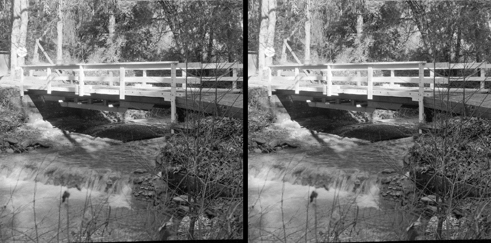
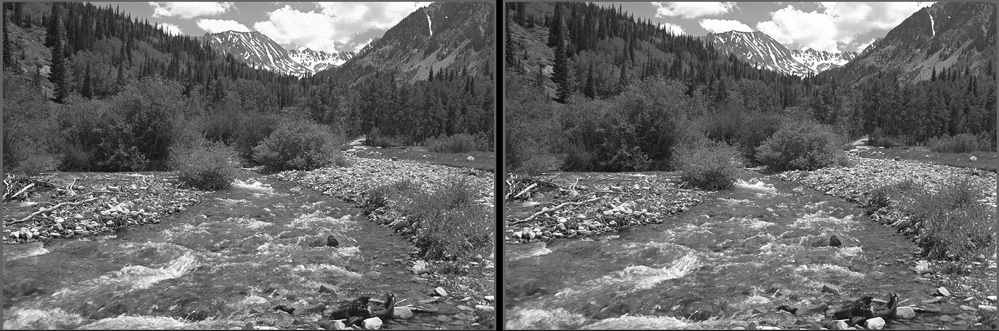
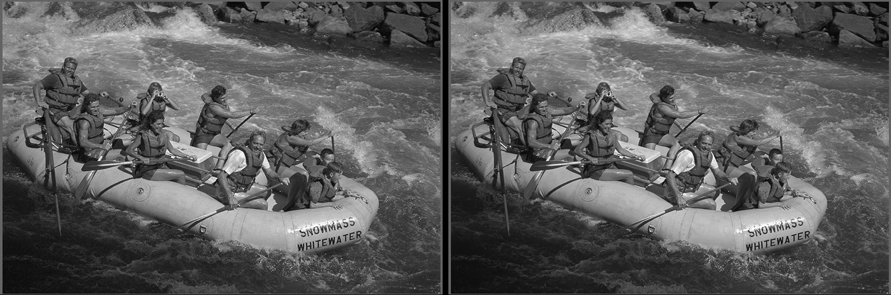
Visual Quality Metric Performances for Images:
The scatter-plots of different image quality metrics are illustrated in the following. Each spot represents a distorted image. The horizontal axis is the quality index obtained from the objective quality metric, such as PSNR, VIF, and SSIM. The vertical axis is the subjective evaluation score (DMOS for LIVE, MOS for IRCCyN/IVC, and Perception Distortion for A57). The left are the scatter-plots before non-linear mapping, while the right are the ones after mapping. The more closely the spots scatter around the fitted line, the better performance of the quality metric.
Detailed information of the image subjective databases could be referred to:
LIVE image subjective database: http://live.ece.utexas.edu/research/quality/.
IRRCyN/IVC image subjective database: http://www2.irccyn.ec-nantes.fr/ivcdb/.
A57 image subjective database: http://foulard.ece.cornell.edu/dmc27/vsnr/vsnr.html.
LIVE Image Database
 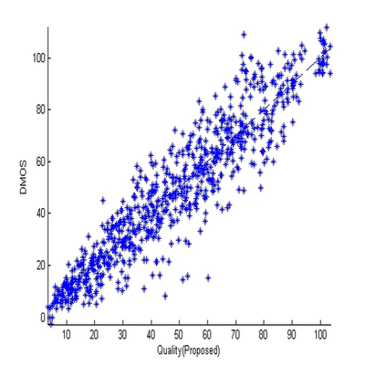
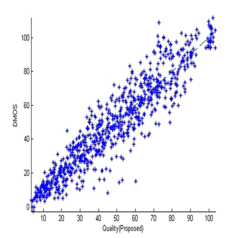
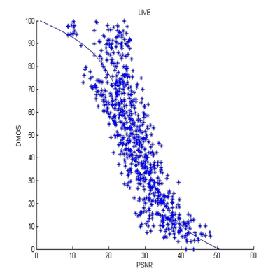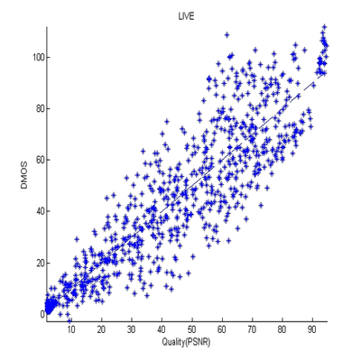
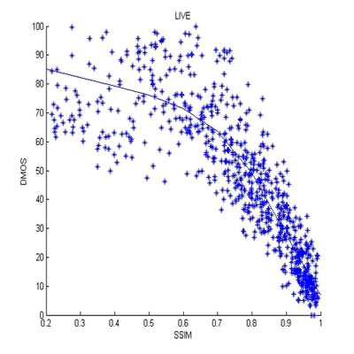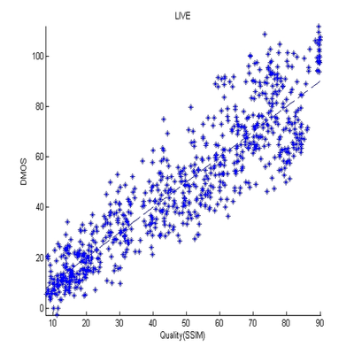
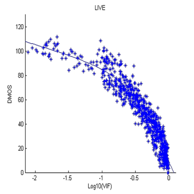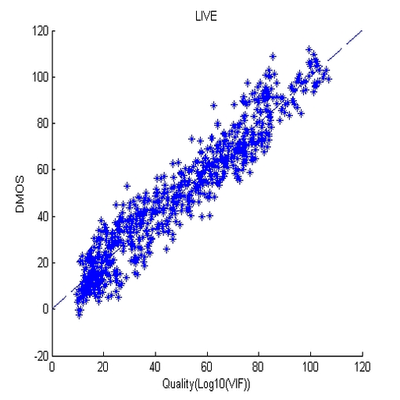
IRCCyN/IVC Image Database

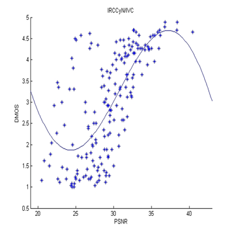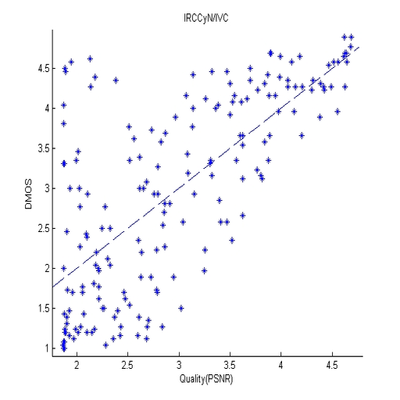
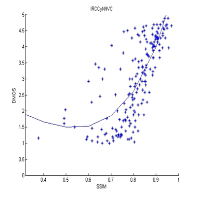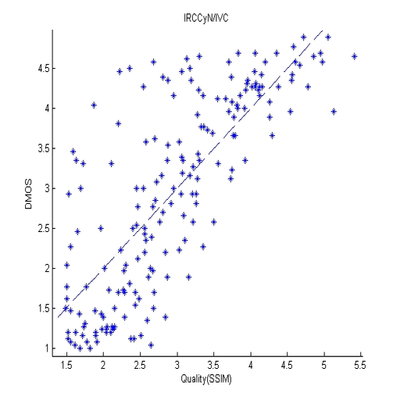
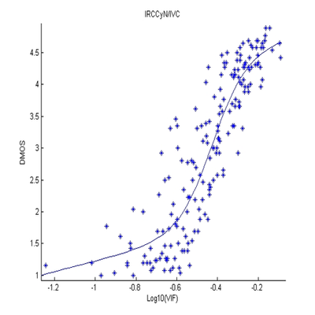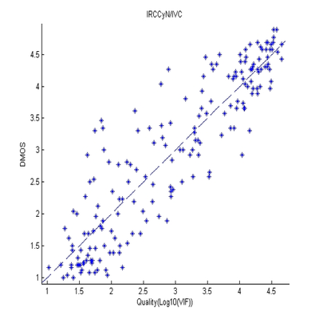
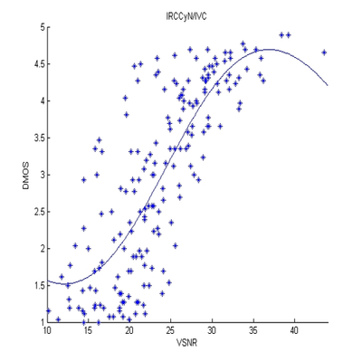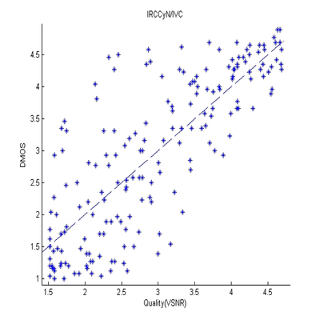
A57 Image Database
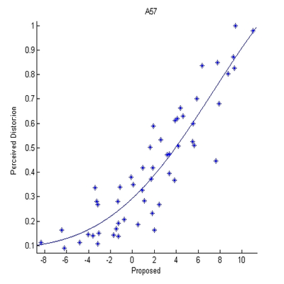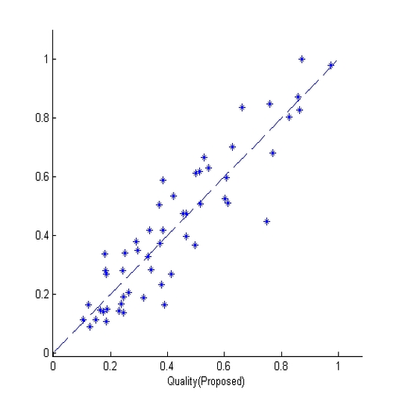
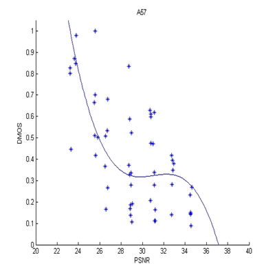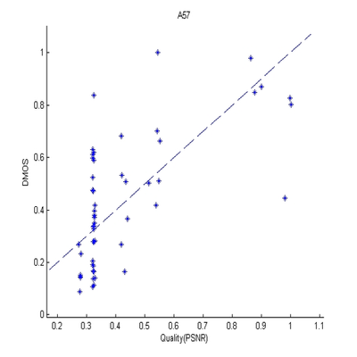
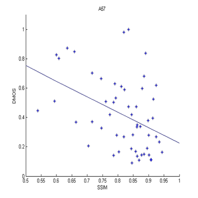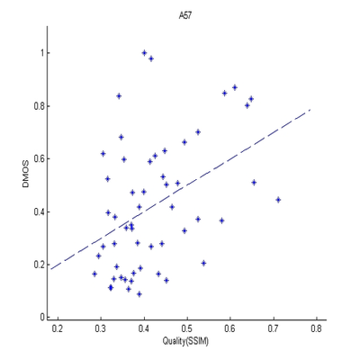
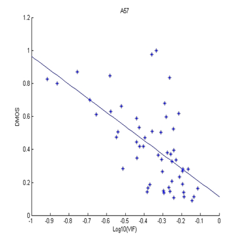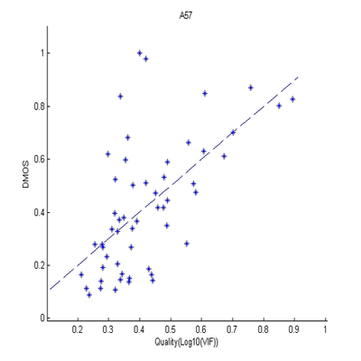
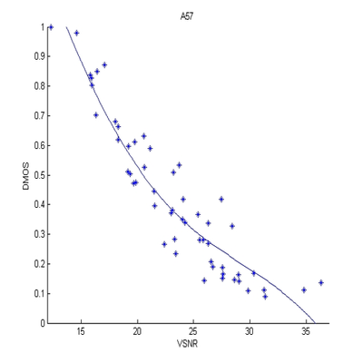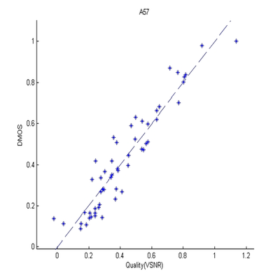
Visual Quality Metric Performances for Videos:
The scatter-plots of different video quality metrics are illustrated in the following. Each spot represents a distorted video sequence. The horizontal axis is the quality index obtained from the objective quality metric. The vertical axis is the subjective evaluation score (DMOS). The left are the scatter-plots before non-linear mapping, while the right are the ones after mapping. The more closely the spots scatter around the fitted line, the better performance the quality metric.
Detailed information of the video subjective database could be referred to:
LIVE video subjective database: http://live.ece.utexas.edu/research/quality/.
LIVE Video Database
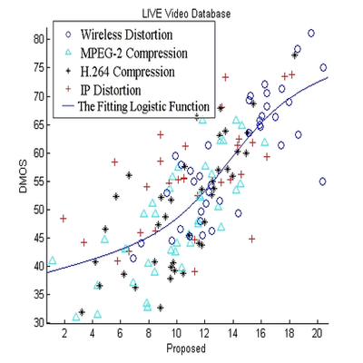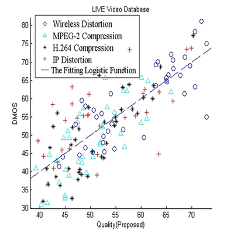
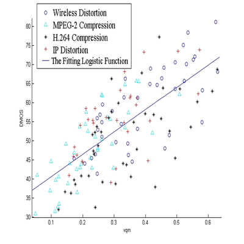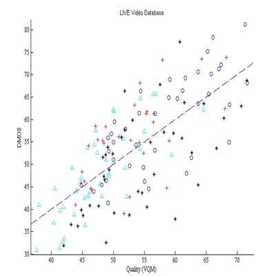
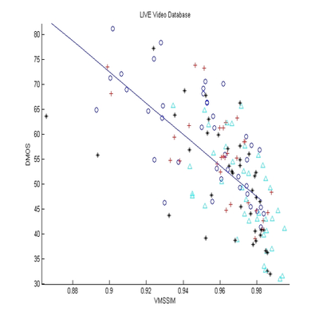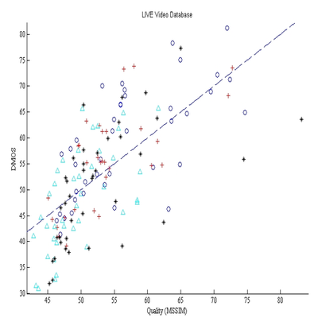
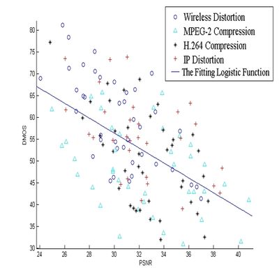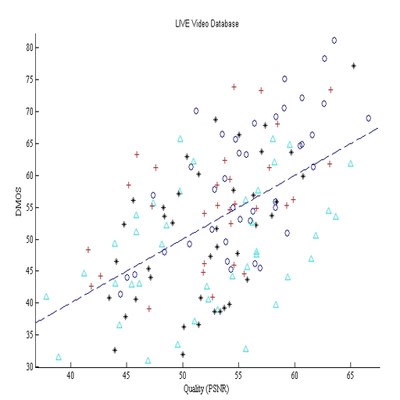
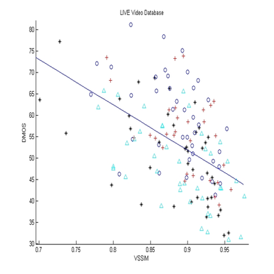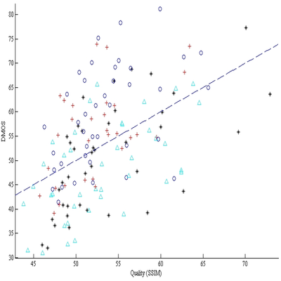
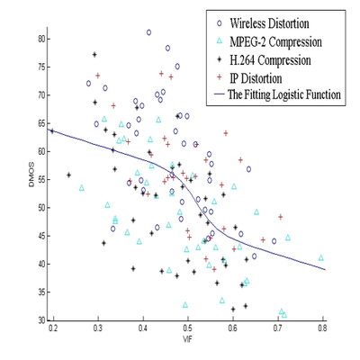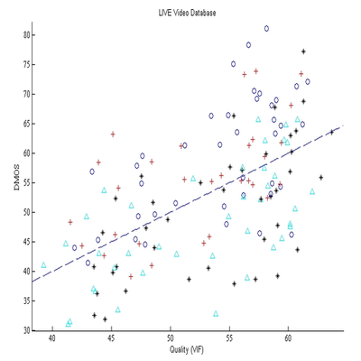